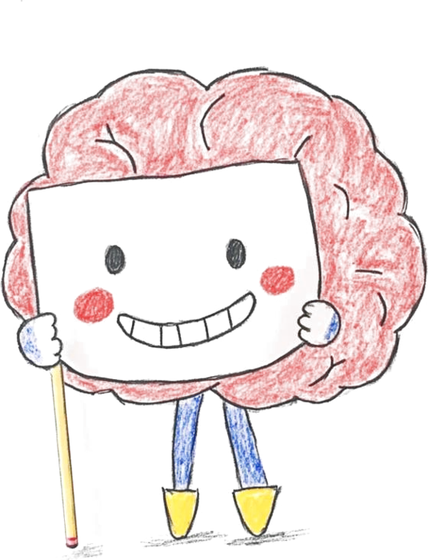

← Terug naar Bijzondere Breintjes
ACHTER JE MASKER
Maskerkompas
Wat laat jij zien? En wat zit er in je hoofd?
Eerst: de uitleg
Wat is een masker?

Een masker is wat je aan de buitenkant laat zien. Soms past dat niet bij wat je vanbinnen voelt. Je lacht, maar eigenlijk ben je verdrietig. Je doet stoer, maar eigenlijk ben je bang.
Iedereen doet dat weleens. Kinderen, juffen, papa's en mama's. Het is niet stout en niet raar.
Weet je wat Max deed?
Max had slecht geslapen. En vandaag was er een rekentoets. Spannend! Op school vroeg de juf: "Gaat het, Max?" Max lachte en zei: "Ja hoor!"
Buiten Max lacht.
Binnen Max is moe en zenuwachtig.
Max had een masker op. Het lachmasker.
Ken je deze maskers?
Lees ze samen. Welke heb je weleens gezien? Bij jezelf, of bij iemand anders?
Dan: nu jij!
1Denk aan een moment
Denk aan een keer dat je buiten iets anders liet zien dan je vanbinnen voelde. Het mag vandaag zijn, of al langer geleden. Waar was je?
Weet je even niks? Kijk nog eens naar de maskers hierboven. Kies er een die je kent en denk: wanneer deed ik dat?
2Welk masker had je op?
3Wat voelde je vanbinnen?
4Til je masker op

5Buiten en binnen
Tot slot

Soms is een masker fijn. Het beschermt je even. Maar de hele dag een masker ophouden is zwaar. Bij mensen die je vertrouwt, mag hij af. Jouw echte gezicht is welkom.
Zing mee: Ik hoef niet altijd blij te zijnVoor grote mensen
Veel kinderen houden overdag een masker op. Ze passen zich aan, lachen mee en vallen niet op. Kinderen met een bijzonder breintje doen dat vaak extra hard. Thuis, waar het veilig is, valt het masker af en komt alles eruit. Dat is geen slecht gedrag. Het is moe zijn van de hele dag volhouden.
Zo vindt je kind een eigen voorbeeld
- Kijk terug, niet in het moment. Midden in een lastig moment lukt nadenken niet. Doe het later: na school met iets lekkers, of bij het naar bed gaan. "Was er vandaag een moment dat je anders deed dan je je voelde?"
- Begin bij jezelf. "Vandaag lachte ik op mijn werk, maar eigenlijk was ik moe." Een voorbeeld van jou laat zien waar het om gaat, en dat het mag.
- Eerst bij een ander. Bij de maskers hierboven staat steeds een voorbeeld. Vraag: "Heb je dit weleens bij iemand gezien?" Dat is makkelijker dan bij jezelf. Daarna: "En bij jou?"
- Geen voorbeeld? Ook goed. Vaak komt het later vanzelf, als het kind de woorden kent. Probeer het een andere dag nog eens.
Leeftijd. Bedoeld voor ongeveer 5 tot 9 jaar. Jongere kinderen doen het samen met jou. Een kind van 8 kan het meestal zelf lezen en kiezen, en kan vaak al een eigen moment noemen.
Wat hier staat is bedoeld om samen te praten, niet om iets vast te stellen.